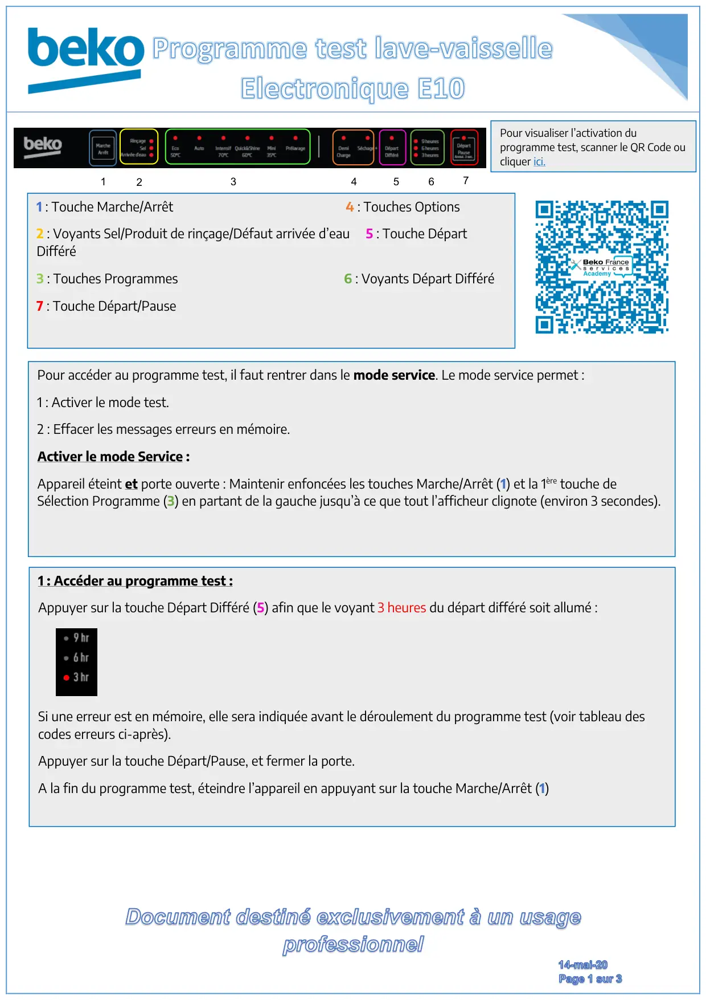
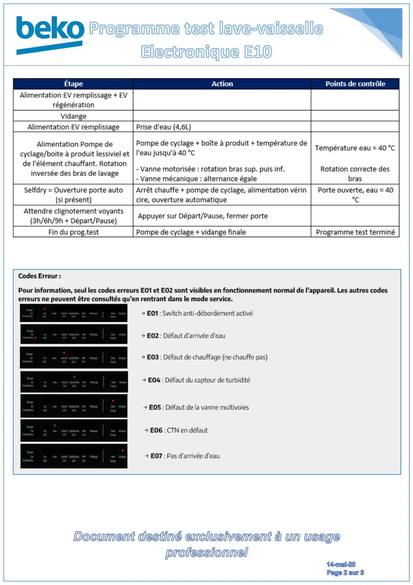
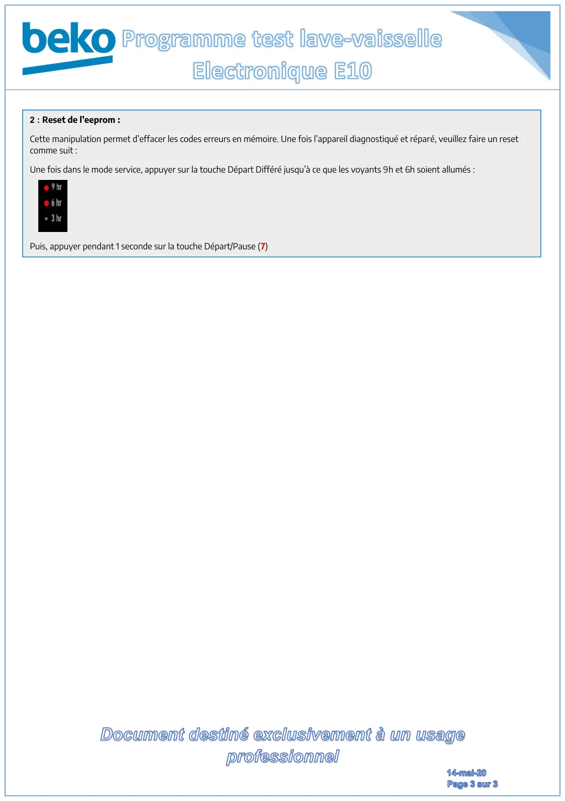

Prog Test Electronique E10

Document destiné exclusivement à un usageprofessionnel14-mai-20Page1sur3Pour accéder au programme test, il faut rentrer dans le mode service. Le mode service permet :1 : Activer le mode test.2 : Effacer les messages erreurs en mémoire.Activer le mode Service :Appareil éteint et porte ouverte : Maintenir enfoncées les touches Marche/Arrêt (1) et la 1ère touche deSélection Programme (3) en partant de la gauche jusqu’à ce que tout l’afficheur clignote (environ 3 secondes).1 : Accéder au programme test :Appuyer sur la touche Départ Différé (5) afin que le voyant 3 heures du départ différé soit allumé :Si une erreur est en mémoire, elle sera indiquée avant le déroulement du programme test (voir tableau descodes erreurs ci-après).Appuyer sur la touche Départ/Pause, et fermer la porte.A la fin du programme test, éteindre l’appareil en appuyant sur la touche Marche/Arrêt (1)12345671 : Touche Marche/Arrêt 4 : Touches Options2 : Voyants Sel/Produit de rinçage/Défaut arrivée d’eau 5 : Touche DépartDifféré3 : Touches Programmes 6 : Voyants Départ Différé7 : Touche Départ/PausePour visualiser l’activation duprogramme test, scanner le QR Code oucliquer ici.
1 / 3
Document destiné exclusivement à un usageprofessionnel14-mai-20Page2sur3
2 / 3
Document destiné exclusivement à un usageprofessionnel14-mai-20Page3sur32 : Reset de l’eeprom :Cette manipulation permet d’effacer les codes erreurs en mémoire. Une fois l’appareil diagnostiqué et réparé, veuillez faire un resetcomme suit :Une fois dans le mode service, appuyer sur la touche Départ Différé jusqu’à ce que les voyants 9h et 6h soient allumés :Puis, appuyer pendant 1 seconde sur la touche Départ/Pause (7)
3 / 3